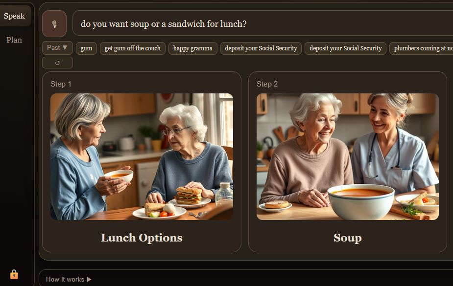

Speak in Pictures
Turn what you say into clear, step-by-step visuals—so conversations work when words alone are not enough.

How it helps
Hearing loss, language gaps, and differences in how we process speech can make back-and-forth dialogue draining or easy to misunderstand. Speak in Pictures supplements speech with concrete images—choices, sequences, and context—so meaning stays visible on the screen and everyone can follow along at their own pace.
Who it can help
Roughly 20 million older Americans live with hearing loss; pairing audio with visuals can reduce missed details and repeated questions in everyday situations like meals, appointments, and household routines.
Non-verbal children with autism and others who communicate with limited speech can use a visual channel to express preferences, understand options, and participate without relying on rapid verbal processing alone.
Foreign-language speakers and mixed-language households often benefit from a visual mode of communication that works alongside written or spoken words—especially for concrete, practical topics where a picture resolves ambiguity faster than translation alone.
Origin
This project was developed and recognized in the Builder Room at Boulder Startup Week—built to explore how humane, accessible technology can support real conversations in real homes and care settings.